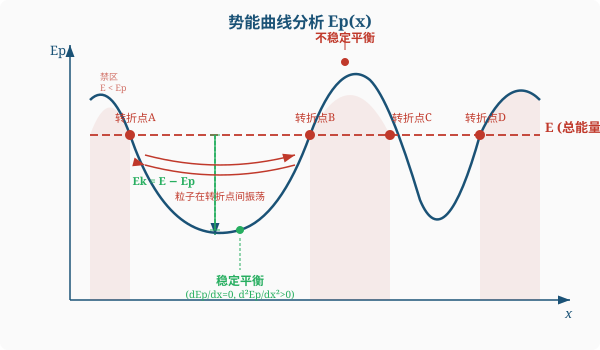

恒力的功：$W = \vv{F}\cdot\Delta\vv{r} = F\cos\theta\cdot s$
变力的功（第二类曲线积分）：
$$W = \int_A^B \vv{F}\cdot\dd\vv{r} = \int_A^B (F_x\dd x + F_y\dd y + F_z\dd z)$$功率：$P = \frac{\dd W}{\dd t} = \vv{F}\cdot\vv{v}$
动能：$E_k = \frac{1}{2}mv^2$
$$W_{合} = \Delta E_k = \frac{1}{2}mv_2^2 - \frac{1}{2}mv_1^2$$合外力做的功 = 动能的增量
所有外力做的功 + 所有内力做的功 = 系统总动能的增量
力 $\vv{F}$ 是保守力，当且仅当做功只与始末位置有关，与路径无关。等价条件：$\oint\vv{F}\cdot\dd\vv{r}=0$
常见保守力：重力、弹力、万有引力、库仑力
非保守力：摩擦力、空气阻力
保守力做功 = 势能减少量：$W_{保} = -(E_{p2}-E_{p1}) = -\Delta E_p$
常见势能：
| 类型 | 势能 | 零点 |
|---|---|---|
| 重力势能 | $E_p = mgh$ | 自选参考面 |
| 弹性势能 | $E_p = \frac{1}{2}kx^2$ | 自然长度处 |
| 万有引力势能 | $E_p = -\frac{GMm}{r}$ | $r\to\infty$ 处为零 |
即 $\vv{F} = -\nabla E_p$（力指向势能减小最快的方向）
在 $E_p(x)$ 图上：
系统机械能 $E = E_k + E_p$
$$W_{外} + W_{非保内} = \Delta E = \Delta E_k + \Delta E_p$$外力做的功 + 非保守内力做的功 = 机械能的增量
条件：$W_{外}=0$ 且 $W_{非保内}=0$（只有保守内力做功）
$$E_k + E_p = \text{const}$$ $$\frac{1}{2}mv_1^2 + E_{p1} = \frac{1}{2}mv_2^2 + E_{p2}$$动量守恒（水平方向无外力）：$0 = mv_1 - Mv_2$，即 $mv_1 = Mv_2$
机械能守恒：$mgR = \frac{1}{2}mv_1^2 + \frac{1}{2}Mv_2^2$
由 $v_2 = \frac{m}{M}v_1$ 代入：$mgR = \frac{1}{2}mv_1^2(1+\frac{m}{M})$
$$v_1 = \sqrt{\frac{2gRM}{m+M}},\quad v_2 = \frac{m}{M}\sqrt{\frac{2gRM}{m+M}}$$$m_1$ 以 $v_1$ 碰静止的 $m_2$（动量+动能都守恒）：
$$v_1' = \frac{m_1-m_2}{m_1+m_2}v_1,\quad v_2' = \frac{2m_1}{m_1+m_2}v_1$$特殊情况：$m_1=m_2$ → 速度交换；$m_1\gg m_2$ → $v_1'\approx v_1,\;v_2'\approx 2v_1$
碰后两者粘合（$v'$相同），动量守恒：$m_1v_1 = (m_1+m_2)v'$
能量损失：$\Delta E_k = \frac{1}{2}\frac{m_1m_2}{m_1+m_2}v_1^2$（折合质量 $\mu = \frac{m_1m_2}{m_1+m_2}$）
沿曲线 $y=x^2$，$\dd y=2x\dd x$：
$$W=\int_0^1[(3x^2+6x\cdot x^2)\dd x+(3x^2+2x^2)\cdot 2x\dd x]$$ $$=\int_0^1(3x^2+6x^3+6x^3+4x^3)\dd x=\int_0^1(3x^2+16x^3)\dd x$$ $$=\left[x^3+4x^4\right]_0^1=1+4=5\,\text{J}$$可以验证 $\frac{\partial F_x}{\partial y}=6x=\frac{\partial F_y}{\partial x}$，该力是保守力，功与路径无关。
从接触到最大压缩（$v=0$）：
动能定理：$0-\frac{1}{2}mv_0^2=-\frac{1}{2}kx_m^2-\mu mg\cdot x_m$
$$\frac{1}{2}kx_m^2+\mu mg\cdot x_m-\frac{1}{2}mv_0^2=0$$解二次方程：$x_m=\frac{-\mu mg+\sqrt{\mu^2m^2g^2+kmv_0^2}}{k}$（取正根）

| 完全弹性 | 非完全弹性 | 完全非弹性 | |
|---|---|---|---|
| 动量 | 守恒 | 守恒 | 守恒 |
| 动能 | 守恒 | 部分损失 | 最大损失 |
| 恢复系数 $e$ | $1$ | $(0,1)$ | $0$ |
恢复系数：$e=-(v_2'-v_1')/(v_2-v_1)$
给定 $E_p(x)$ 图和总能量 $E$ 水平线：
$r\to\infty$：$E_p\to 0$（无作用力）
$r=r_0=2^{1/6}\sigma$：$E_p$ 取极小 $-\varepsilon$（稳定平衡位置）
$r
$r>r_0$：$F<0$（引力）
分子在 $r_0$ 附近做小振动（近似简谐）
| 方法 | 适用条件 | 优势 |
|---|---|---|
| 动能定理 $W_{合}=\Delta E_k$ | 任何情况 | 万能，但需算所有力的功 |
| 机械能守恒 $E_{k1}+E_{p1}=E_{k2}+E_{p2}$ | 只有保守内力做功 | 不需要知道过程细节 |
| 功能原理 $W_{外}+W_{非保}=\Delta E$ | 有非保守力做功 | 可以处理摩擦等问题 |
力沿 $x$ 方向，直接积分：
$$W = \int_{x_1}^{x_2} F\dd x = \int_{x_1}^{x_2}\left(-\frac{A}{x^2}\right)\dd x = \left[\frac{A}{x}\right]_{x_1}^{x_2} = A\left(\frac{1}{x_2}-\frac{1}{x_1}\right)$$物理分析：因为 $x_2>x_1>0$，故 $\frac{1}{x_2}<\frac{1}{x_1}$，所以 $W<0$。这说明质点远离力心时引力做负功，符合直觉。
顺便可以定义势能：$E_p(x) = -A/x$（取 $x\to\infty$ 为零势能点），可以验证 $W = E_p(x_1)-E_p(x_2) = -\Delta E_p$。
第一步：计算功
沿 $y=x$，有 $\dd y = \dd x$，且 $y=x$。代入线积分：
$$W = \int_O^A (F_x\dd x + F_y\dd y) = \int_O^A (xy\dd x + y^2\dd y)$$用 $y=x$，$\dd y=\dd x$ 参数化：
$$W = \int_0^1 (x\cdot x\,\dd x + x^2\,\dd x) = \int_0^1 2x^2\dd x = \left[\frac{2x^3}{3}\right]_0^1 = \frac{2}{3}\,\text{J}$$第二步：判断是否为保守力
保守力的充要条件（二维）：$\frac{\partial F_x}{\partial y} = \frac{\partial F_y}{\partial x}$
$$\frac{\partial F_x}{\partial y} = \frac{\partial (xy)}{\partial y} = x$$ $$\frac{\partial F_y}{\partial x} = \frac{\partial (y^2)}{\partial x} = 0$$因为 $x \neq 0$（一般情况下），所以 $\frac{\partial F_x}{\partial y} \neq \frac{\partial F_y}{\partial x}$，该力不是保守力。
设链条线密度 $\lambda = m/L$。以桌面为零势能面。
方法一：直接积分（变力做功）
设某时刻垂下部分长度为 $x$（$0 \leq x \leq L/4$），则拉力需要克服垂下部分的重力：
$$F(x) = \lambda x g = \frac{mg}{L}x$$将链条从垂下 $L/4$ 拉到全部上桌（$x$ 从 $L/4$ 变到 $0$），拉力做正功：
$$W = \int_{L/4}^{0} F(x)(-\dd x) = \int_0^{L/4} \frac{mg}{L}x\,\dd x = \frac{mg}{L}\cdot\frac{x^2}{2}\bigg|_0^{L/4} = \frac{mg}{L}\cdot\frac{L^2}{32} = \frac{mgL}{32}$$方法二：用势能变化（更简洁）
初态：垂下部分长 $L/4$，其质心在桌面下方 $L/8$ 处
末态：链条全部在桌面上，势能为零
拉力做的功 = 系统势能增量（桌面光滑，无摩擦）：
$$W = \Delta E_p = 0 - \left(-\lambda\cdot\frac{L}{4}\cdot g\cdot\frac{L}{8}\right) = \frac{m}{L}\cdot\frac{L}{4}\cdot g\cdot\frac{L}{8} = \frac{mgL}{32}$$(1) 光滑轨道段——机械能守恒
轨道光滑，只有重力做功：
$$mgh = \frac{1}{2}mv_1^2$$ $$v_1 = \sqrt{2gh}$$(2) 粗糙水平面——功能原理
水平面上，摩擦力做功使动能减为零：
$$0 - \frac{1}{2}mv_1^2 = -\mu mg\cdot s$$ $$s = \frac{v_1^2}{2\mu g} = \frac{2gh}{2\mu g} = \frac{h}{\mu}$$或者一步到位：整个过程用功能原理
$$W_{非保} = \Delta E = (0+0) - (0+mgh) = -mgh$$ $$-\mu mg\cdot s = -mgh \implies s = h/\mu$$第一阶段：弹簧释放——机械能守恒
$$\frac{1}{2}kx_0^2 = \frac{1}{2}mv_0^2$$ $$v_0 = x_0\sqrt{k/m}$$第二阶段：子弹打木块——完全非弹性碰撞，动量守恒
碰撞瞬间内力远大于外力，动量守恒：
$$mv_0 = (m+M)v$$ $$v = \frac{mv_0}{m+M} = \frac{m}{m+M}\cdot x_0\sqrt{\frac{k}{m}} = \frac{x_0\sqrt{km}}{m+M}$$第三阶段：计算碰撞中的动能损失
$$\Delta E_k = \frac{1}{2}mv_0^2 - \frac{1}{2}(m+M)v^2$$ $$= \frac{1}{2}mv_0^2 - \frac{1}{2}(m+M)\cdot\frac{m^2v_0^2}{(m+M)^2}$$ $$= \frac{1}{2}mv_0^2\left(1-\frac{m}{m+M}\right) = \frac{1}{2}\cdot\frac{mM}{m+M}\cdot v_0^2 = \frac{1}{2}\mu v_0^2$$其中约化质量 $\mu = mM/(m+M)$。代入 $v_0$：
$$\Delta E_k = \frac{Mkx_0^2}{2(m+M)}$$碰撞中损失的动能转化为热能和形变能。
三者完全等价，考试中用偏导数条件最快。
Step 1：判断
$$\frac{\partial F_x}{\partial y}=\frac{\partial(2xy+3)}{\partial y}=2x,\quad \frac{\partial F_y}{\partial x}=\frac{\partial(x^2-4y)}{\partial x}=2x$$二者相等，故 $\vv{F}$ 是保守力。
Step 2：求势能函数
由 $F_x=-\frac{\partial E_p}{\partial x}$：
$$E_p=-\int F_x\dd x=-\int(2xy+3)\dd x=-(x^2y+3x)+g(y)$$由 $F_y=-\frac{\partial E_p}{\partial y}$：
$$-\frac{\partial E_p}{\partial y}=x^2-g'(y)=x^2-4y \implies g'(y)=4y \implies g(y)=2y^2+C$$ $$\boxed{E_p=-(x^2y+3x)+2y^2+C}$$| 定理 | 公式 | 含义 |
|---|---|---|
| 质点动能定理 | $W_{合}=\Delta E_k$ | 合力功 = 单个质点动能变化 |
| 质点系动能定理 | $W_{外}+W_{内}=\Delta E_k$ | 所有力（含内力）的总功 = 系统总动能变化 |
| 功能原理 | $W_{外}+W_{非保内}=\Delta E$ | 非保守力做功 = 机械能变化 |
| 机械能守恒 | $\Delta E=0$ | 无外力做功且无非保守内力做功 |
势能：$E_p(r) = -\frac{GMm}{r}$，$E_p(\infty)=0$
临界条件：$r\to\infty$ 时 $v\to 0$，即 $E=0$
$$\frac{1}{2}mv_{esc}^2 + \left(-\frac{GMm}{R}\right) = 0$$ $$v_{esc} = \sqrt{\frac{2GM}{R}} = \sqrt{2gR} \approx 11.2\,\text{km/s}$$这就是第二宇宙速度（逃逸速度）。$E>0$ 即可逃逸，$E<0$ 则被束缚（做椭圆轨道运动）。